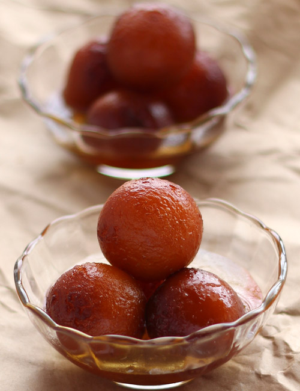

GULAB JAMUN

Experience the enchantment of Gulab Jamuns, a beloved Indian dessert cherished throughout festivities and celebrations. These delectable confections, soaked in syrup, are simply irresistible. Indulge in the delightful world of Gulab Jamuns. With a slightly crisp exterior and a sweet, melt-in-the-mouth interior, these treats offer a flavour journey you'll crave. The secret to their exquisite texture? Nestlé MILKMAID. It eliminates the need for milk powder and serves as a binding agent, adding a creamy richness.
INGREDIENTS
- 1/2 tin Nestlé MILKMAID
- 2 cups (200 gm) Flour
- 600 gms Grated Paneer
- 200 gm Sooji/Rava
- 1½ tsp Baking Powder
- 1½ tsp Baking Soda
- For Frying: Oil
- 2 litres Water
- 1 kg Sugar
6-8 nos Coarsely Crushed Cardamom
HOW TO MAKE GULAB JAMUN
- Boil sugar and water to prepare syrup remove from fire. Add cardamom and keep aside to cool.
- In a mixing bowl put the flour, paneer, sooji, Nestlé MILKMAID, baking powder and baking soda. Mix gently to make a soft dough. Do not knead too much.
- Divide the mixture into 30-35 portions and gently roll into round gulab jamuns. Fry in the oil at very low flame till golden brown in color.
- Keep putting the fried gulab jamuns in the prepared sugar syrup. Once all the gulab jamuns are in the sugar syrup bring it to a boil and remove from flame.
- Serve warm.
Mouth watering Gulab Jamuns are ready.